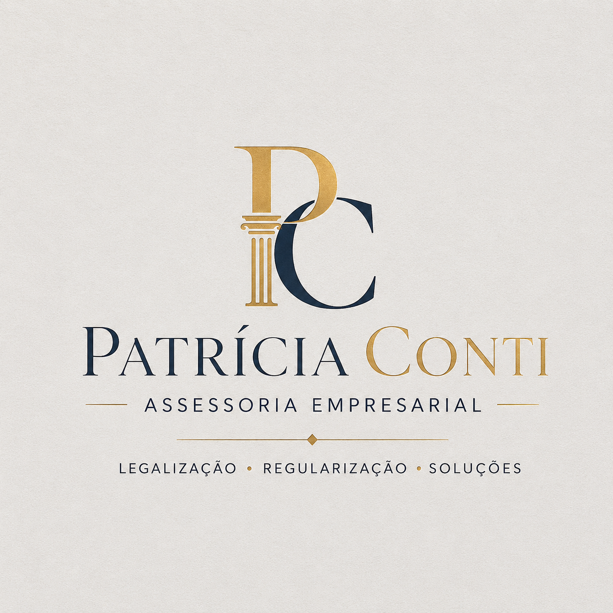
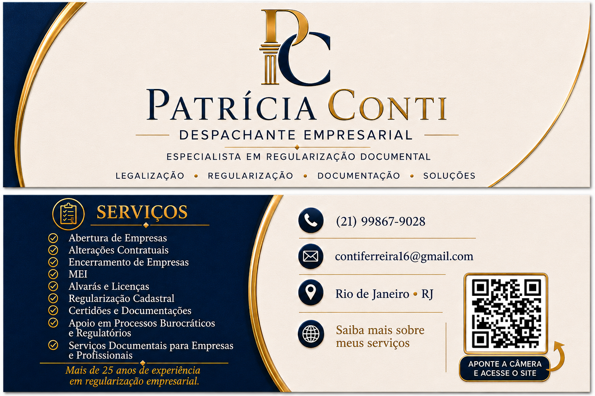
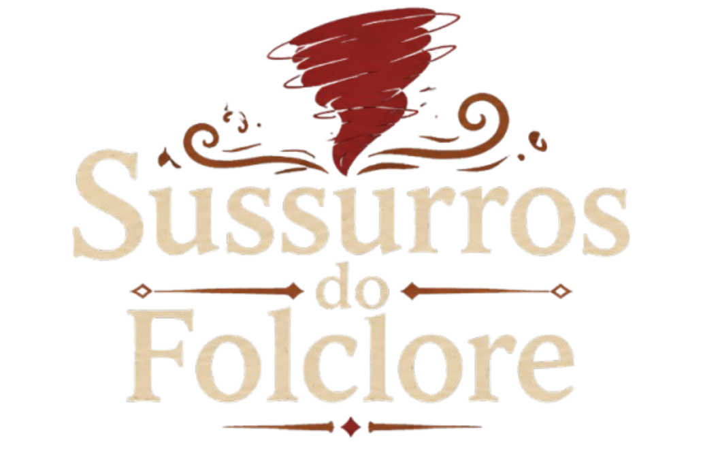
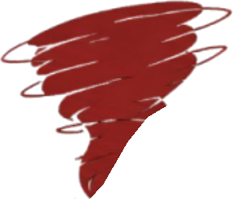
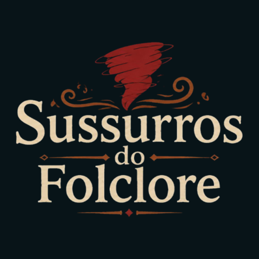
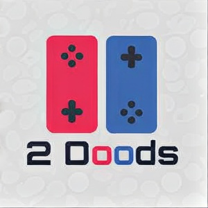
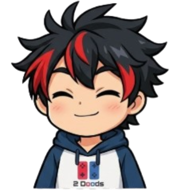
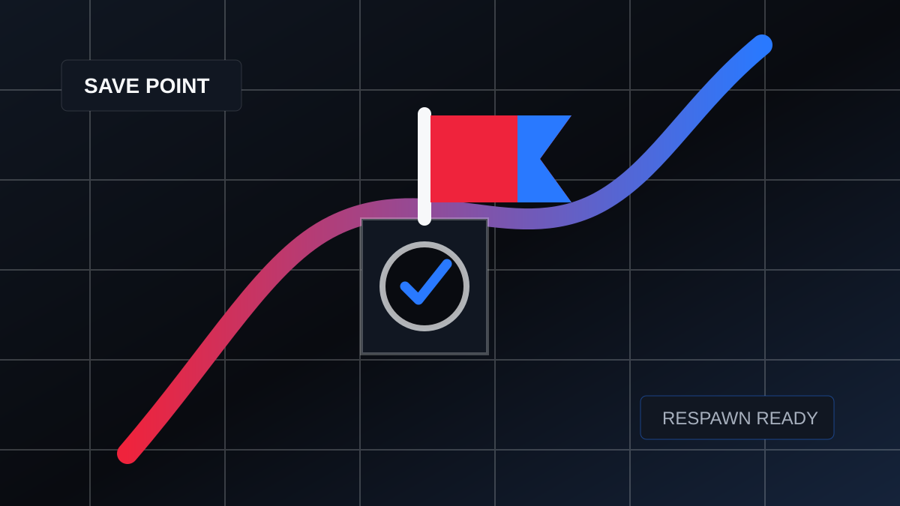
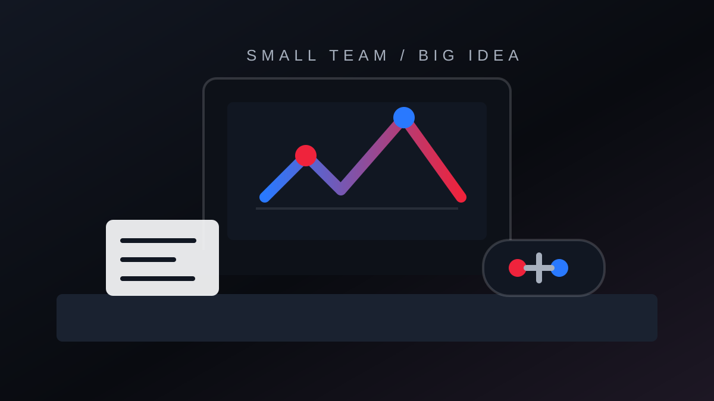
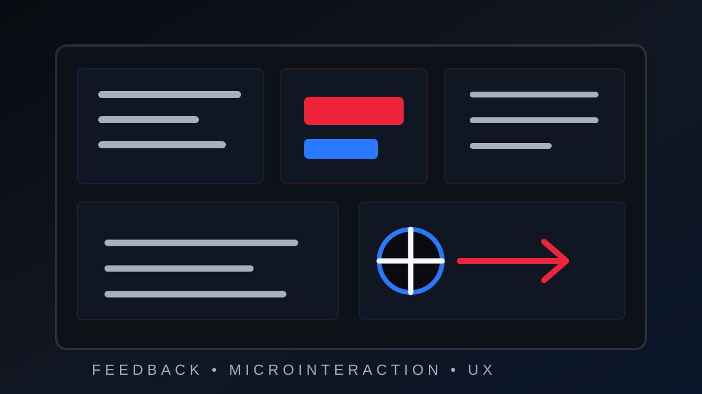

material em curadoria
Showreel em preparação
O vídeo principal será adicionado aqui quando o arquivo final estiver no projeto. Até lá, a seção já funciona como ponto de entrada para trabalhos, cases e produção autoral.
Reinhold Berner
Transformo pesquisa, roteiro e direção criativa em conteúdo audiovisual pensado para diferentes públicos, formatos e plataformas.

showreel
Espaço preparado para reunir meu melhor material audiovisual em uma apresentação direta para produtoras, agências, equipes de comunicação e oportunidades de videomaker.
material em curadoria
O vídeo principal será adicionado aqui quando o arquivo final estiver no projeto. Até lá, a seção já funciona como ponto de entrada para trabalhos, cases e produção autoral.
sobre
Sou Reinhold Berner, produtor multimídia e formando em Design de Games. Minha trajetória profissional foi construída entre audiovisual, comunicação digital, tecnologia e cultura gamer.
Atualmente integro a área de Comunicação e Mídias Digitais da ASDUERJ e também conduzo a 2Doods, projeto independente no qual atuo desde pesquisa e planejamento editorial até roteiro, edição, publicação e desenvolvimento da presença digital.
Gosto especialmente de projetos nos quais conteúdo, linguagem visual e tecnologia trabalham juntos para comunicar alguma coisa de maneira clara e interessante.
frentes de atuação
Minha atuação combina linguagem audiovisual, pesquisa, roteiro, edição, organização de pauta e comunicação digital para acompanhar conteúdos da ideia à publicação.
Planejamento e apoio em gravações, organização de materiais, leitura de formato e atenção ao objetivo de cada peça antes da edição.
Edição de vídeos curtos e conteúdos digitais com foco em ritmo, clareza, adaptação para plataforma e comunicação eficiente.
Pesquisa de referências, estruturação de pautas, definição de abordagem e construção de roteiros para transformar assunto em narrativa.
Organização de linguagem, público, objetivo, formato e linha editorial para que o conteúdo tenha intenção e coerência.
Adaptação de conteúdo para redes sociais, canais institucionais e plataformas digitais, considerando calendário, público e contexto.
Uso de IA, UX, experiências web e organização digital como apoio para acelerar pesquisa, adaptar formatos e ampliar a presença dos projetos.
experiências
Contextos que fortaleceram minha atuação em organização, comunicação, acompanhamento de equipes e construção de projetos com ritmo de entrega.
ASDUERJ
Atuação na comunicação institucional e produção de conteúdo digital da associação, com apoio em redes sociais, gravações, roteirização, edição de vídeos curtos, tratamento de imagens, organização de pautas e atualização de conteúdos digitais.
2Doods
Projeto independente de comunicação sobre games, cultura gamer e indústria dos jogos. Minha atuação envolve planejamento editorial, pesquisa, roteiro, produção audiovisual, edição, direção visual, branding, publicação, adaptação de conteúdo e gestão das plataformas digitais.
Frontend / UX
Projeto pessoal desenvolvido para consolidar minha atuação em frontend, UX e experiências digitais. O site reúne projetos web, interfaces responsivas, organização visual e aplicações interativas, funcionando também como demonstração prática da minha evolução técnica em HTML, CSS, JavaScript e design de interface.
Game Jam ECDD 2023
Atuação em suporte logístico, operacional e de comunicação com participantes em um ambiente criativo de prazo curto. A experiência fortaleceu minha capacidade de organização, acompanhamento de equipes, leitura de contexto e resposta rápida para manter a operação e a experiência do evento funcionando com fluidez.
Santander Open Academy
Apoio à organização de atividades, comunicação com participantes e acompanhamento de rotinas ligadas a programas educacionais. Somada à formação complementar em comunicação, inteligência artificial e produção, essa vivência ampliou meu repertório para projetos digitais com foco em clareza, aprendizagem e desenvolvimento profissional.
2Doods
A 2Doods é um projeto independente de comunicação digital focado em games, cultura gamer e indústria dos jogos. Ela mostra minha capacidade de acompanhar um conteúdo da ideia à publicação.
Minha atuação envolve planejamento editorial, pesquisa, roteiro, produção audiovisual, edição, direção visual, branding, publicação, adaptação de conteúdo, gestão de plataformas digitais e relacionamento com comunidade.
portfólio audiovisual
A área está estruturada para apresentar vídeos, peças digitais e conteúdos institucionais com clareza sobre categoria, função, ferramentas e link de acesso quando houver material publicado.
Vídeos longos / YouTube
Produções autorais com pesquisa, roteiro, direção de conteúdo, edição, identidade visual, publicação e adaptação para plataformas.
Assistir trabalhosShorts / Reels
Adaptação de ideias para formatos rápidos, com atenção a ritmo, abertura, retenção, legibilidade e adequação para redes sociais.
Conteúdo institucional
Espaço preparado para reunir peças, vídeos, campanhas e coberturas produzidas na experiência atual em comunicação institucional.
Roteiro e direção de conteúdo
Organização narrativa de um projeto acadêmico complexo em uma apresentação pública com pitch, documentação, pesquisa, atmosfera e acesso à versão jogável.
Explorar projetocase em construção
Estrutura preparada para transformar a experiência atual em um case profissional conforme peças, vídeos, campanhas e resultados puderem ser adicionados.
Contexto
Atuação na comunicação da associação, apoiando conteúdos para redes sociais, canais institucionais e plataformas digitais.
Desafio
A rotina envolve adaptar informação institucional para formatos digitais, mantendo clareza, organização e consistência visual.
Minha atuação
Apoio em gravações, roteirização, edição de vídeos curtos, tratamento de imagens, organização de pautas e banco de imagens e vídeos.
processo criativo
Meu processo conecta pesquisa, linguagem visual, roteiro, produção e adaptação para que cada conteúdo tenha intenção antes de chegar ao editor.
Entender tema, público, referências e objetivo.
Definir abordagem, tom e promessa do conteúdo.
Organizar narrativa, abertura, ritmo e pontos-chave.
Preparar materiais, gravação, assets e referências.
Construir ritmo, clareza, cortes e acabamento visual.
Ajustar formatos para redes, canais e públicos.
Organizar entrega, distribuição e presença digital.
cases criativos
Projetos que combinam direção de conteúdo, branding, UX, arquitetura da informação, produção multimídia e desenvolvimento digital para clientes reais e iniciativas autorais.
case profissional
Branding + Posicionamento Digital + UX + Frontend
Patrícia Conti é uma profissional com mais de 25 anos de experiência em legalização e regularização empresarial.
O desafio era transformar uma trajetória profissional consolidada em uma presença digital capaz de transmitir credibilidade, organização e confiança para novos clientes.
Minha atuação envolveu branding, posicionamento, direção de conteúdo, UX, arquitetura da informação e desenvolvimento frontend, partindo da compreensão da profissional antes de qualquer decisão de interface.
branding e posicionamento


O desafio
O projeto partiu da ausência de uma presença digital estruturada e da necessidade de comunicar experiência, confiança e clareza em serviços ligados a documentação empresarial.
Posicionamento
A estratégia posicionou Patrícia como uma profissional experiente, organizada e confiável para empresários que precisam lidar com burocracias, órgãos públicos e regularização. O cartão de posicionamento também atua como peça comercial e conecta o público ao site por QR Code.
Branding
A direção visual utilizou azul marinho para transmitir confiança e estabilidade, dourado para reforçar experiência e sofisticação, e uma aparência institucional alinhada a uma profissional experiente. A logo foi idealizada e construída para sustentar essa presença moderna sem perder a sobriedade do segmento.
Conteúdo
Estruturei a hierarquia da informação, a ordem das seções, o tom de voz, a apresentação dos serviços e os elementos de autoridade para deixar claro quem é Patrícia, o que faz, sua experiência e como entrar em contato.
UX
A experiência foi pensada com navegação direta, leitura facilitada, foco mobile first e acesso rápido aos serviços, à trajetória profissional, aos valores de referência e ao contato.
Frontend
Desenvolvi o frontend responsivo, a organização semântica, a timeline profissional, a integração do currículo digital e o contato por e-mail via mailto para facilitar a conversa direta entre visitante e cliente.
Minha atuação
Neste projeto atuei desde a construção da identidade e do posicionamento até o desenvolvimento frontend da solução final, conectando branding, UX Design, arquitetura da informação, direção de conteúdo, comunicação visual e posicionamento digital.
Resultado do projeto
O resultado transformou uma trajetória profissional de mais de 25 anos em uma plataforma digital capaz de comunicar confiança, experiência e profissionalismo, com projeto desenvolvido integralmente por Reinhold Berner.
case profissional
branding + ux comercial
Branding + Flyer + Cardápio Digital + UX Comercial
Projeto desenvolvido para uma cliente real do segmento de alimentação caseira em São Bento, Caxias.
A proposta foi criar uma identidade visual acolhedora e funcional, combinando branding artesanal, cardápio semanal e um site responsivo integrado ao WhatsApp para automatizar pedidos.
O projeto envolveu criação de identidade visual, desenvolvimento da logo, definição de paleta de cores, estruturação do flyer semanal, UX focado em facilidade de pedido, desenvolvimento do site responsivo, integração com WhatsApp e uma lógica automática para identificar o prato do próximo sábado.
mockup do flyer

Branding
A identidade visual foi pensada para transmitir comida caseira, acolhimento, simplicidade, sabor brasileiro e proximidade familiar. A paleta utiliza tons creme, terracota e dourado suave para gerar conforto visual e apetite.
Flyer
O flyer semanal foi estruturado para facilitar leitura rápida, destacar o prato da semana, organizar preços de forma intuitiva e funcionar bem tanto no WhatsApp quanto no Instagram.
Site
O site foi desenvolvido para simplificar pedidos, automatizar o contato via WhatsApp, identificar automaticamente o próximo sábado do mês, destacar o prato vigente e facilitar a navegação no mobile.
Resultado do projeto
A cliente recebeu o projeto com entusiasmo e aprovação imediata, validando tanto a identidade visual quanto a praticidade do sistema digital criado para os pedidos semanais.
projeto acadêmico e experiência digital
Direção de Conteúdo + UX + Documentação Interativa + Frontend
Sussurros do Folclore é um projeto acadêmico de Design de Games sobre narrativa ambiental, semiótica visual e folclore brasileiro. Para apresentá-lo além da entrega universitária, desenvolvi uma experiência web bilíngue que reúne pesquisa, processo criativo, direção de arte, áudio, documentação, pitch e acesso à versão jogável.
O desafio foi transformar um TCC extenso e conceitualmente complexo em uma narrativa digital clara, explorável e visualmente conectada à atmosfera do jogo, sem reduzir o rigor da pesquisa.
atmosfera e documentação



Implementação Técnica
A experiência foi desenvolvida com React 19, TypeScript, Vite, CSS responsivo, Context API para áudio, hooks personalizados, LocalStorage, metadados dinâmicos, Open Graph, Twitter Cards, canonical URL, integrações com YouTube, Miro, itch.io, visualização de PDFs e deploy estático no Netlify.
Resultado
O resultado foi uma plataforma bilíngue que organiza a pesquisa, documenta o processo e permite que o projeto continue acessível além da banca acadêmica, funcionando como apresentação do jogo, arquivo de produção e case profissional.
produto autoral e ecossistema de conteúdo gamer
Direção de Conteúdo + Produto Digital + UX Gamificada + Frontend
A 2Doods é um projeto autoral de comunicação digital e cultura gamer. O Doodverse amplia a marca para além das redes sociais, reunindo vídeos, artigos, curiosidades, gamificação, áudio, comunidade e experiências interativas em um produto digital próprio.
Mais do que criar uma vitrine para o canal, desenvolvi um ecossistema em que conteúdo e interação compartilham a mesma identidade: o visitante explora portais, acumula pontos, desbloqueia conquistas, lê artigos e participa de um minigame.
marca, editorial e gamificação





Implementação Técnica
O Doodverse foi construído com React 19, TypeScript, Vite, React Router, Framer Motion, Lucide React, CSS com variáveis, componentes reutilizáveis, hooks personalizados, LocalStorage, SPA, redirects do Netlify, SEO, sitemap, robots.txt, sistema de áudio, conquistas, pontuação própria e dados editoriais estruturados.
Resultado
O Doodverse transformou a 2Doods em uma experiência proprietária e expansível, conectando conteúdo editorial, audiovisual, branding, gamificação e desenvolvimento web em uma plataforma com identidade própria.
vitrine em movimento
Espaço de escrita, análise e reflexão sobre cultura, mídia, jogos e audiovisual.
Ler publicaçõesportfólio geral
Para ver também minha frente em web, UX, design e experiências digitais, o portfólio geral reúne projetos complementares à minha atuação em produção.
Abrir portfólio geralcurrículos
Currículo Produção / Audiovisual
Versão focada em produção multimídia, audiovisual, comunicação digital, eventos e projetos criativos.
Abrir / baixar currículoCurrículo Dev / Frontend
Versão focada em frontend, UX, experiências digitais e projetos web.
Baixar currículo devCurrículo Generalista
Versão mais generalista do currículo.
Abrir / baixar currículocursos & certificações
idiomas & competências
ferramentas
Em vez de notas arbitrárias, prefiro apresentar ferramentas pelo papel que elas cumprem no fluxo de pesquisa, edição, adaptação, design e publicação.
Edição e acabamento audiovisual.
Edição curta e adaptação para redes.
Peças visuais, apoio gráfico e comunicação digital.
Apoio na adaptação de vídeos para cortes e formatos curtos.
Pesquisa, ideação, organização de referências e otimização de processos.
contato
Disponível para oportunidades em produção audiovisual, videomaker, comunicação digital, social media, edição e projetos em que conteúdo precise sair do conceito e chegar à publicação.